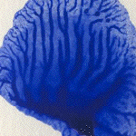
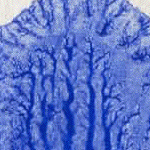

| Here is an experiment with the dilution of the paint. |
| Left to right we see undiluted, 1:1, and 1:2 dilutions. |
| Click each picture for a magnified view in a new window. |
|  |  |
| The number of branches off the longest branch is (left to right) 4, 7, and over 13. |
| It is hardly a surprise that the delicacy and number of branches increases as the viscosity of the paint is reduced. |
| The direction of pull is down --- that is, the papers are pulled apart on top first. |
| As the papers pull apart, the small ridges of paint coalesce into larger ridges, so the largest ridges are at the bottom of the picture. |
| Greater viscosity should give rise to thicker ridges. |
Return to Tanja Geis' experiments.